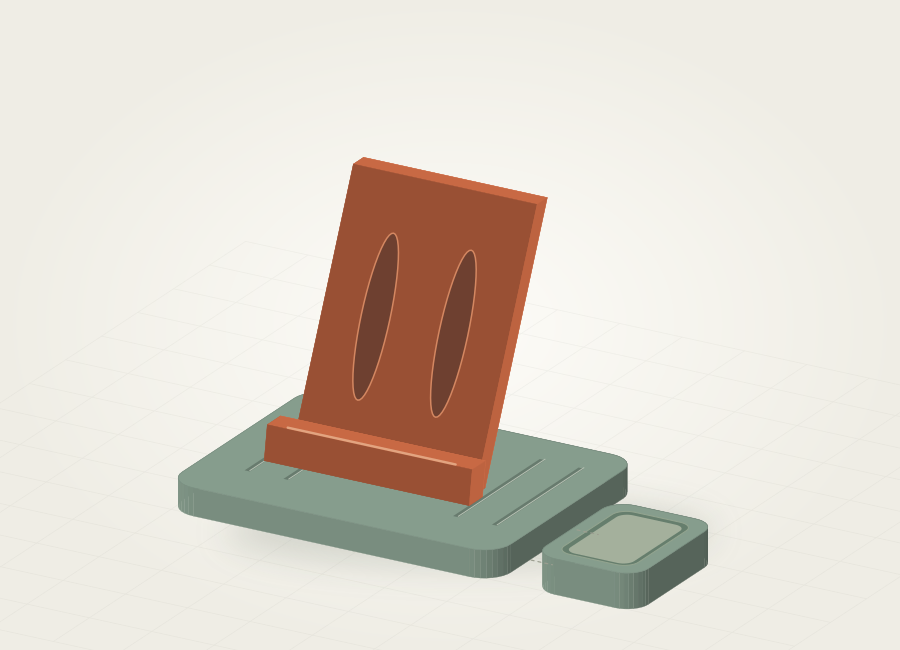

Supporto Modulare.
Un appoggio per il telefono, pensato per la scrivania. Un concept per esplorare incastri, inclinazione e piccoli gesti quotidiani.

Un posto per ogni gesto.
Il concept esplora un supporto da scrivania con elementi da progettare come parti separate. Il punto di partenza sarebbe capire come viene usato il telefono: consultare lo schermo, passare un cavo o liberare spazio sul piano di lavoro.
Dalla forma al prototipo.
Geometria in CAD
Definire base, appoggio e collegamenti attraverso un modello CAD, così da poter rivedere dimensioni e inclinazione durante lo sviluppo.
Incastri da verificare
Studiare come le parti si assemblano e quali giochi lasciare fra le superfici. La tenuta degli incastri andrebbe controllata su prototipi fisici.
Prove sul tavolo
Preparare prototipi per valutare stabilità, accesso al cavo e compatibilità con il telefono scelto, prima di stabilire una configurazione finale.
Il prossimo passo.
Il modello 3D e la scheda del Supporto Modulare non sono ancora disponibili. Dimensioni del telefono, inclinazione, materiale e tolleranze di assemblaggio restano da definire e verificare.
Parliamo di un progetto simileSi parte dall’utilizzo
Il dispositivo, la posizione sulla scrivania e i movimenti di ogni giorno aiutano a scegliere la forma prima di passare al modello.